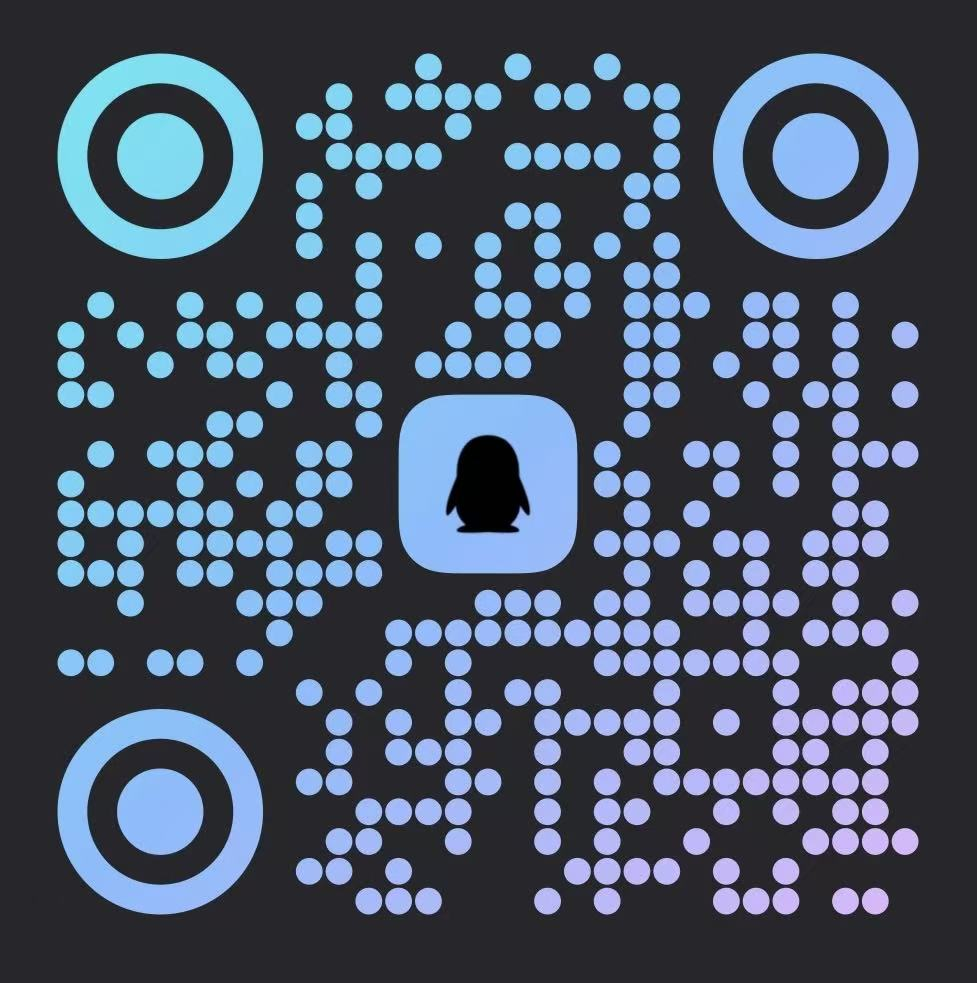

坠入爱河，
而非落入算法。
一封写给南大校园的破冰书。
关于那些不敢开口的春天，那些没说出口的喜欢。
这封信，写给每一位在深夜反复翻看一个朋友圈、却始终发不出那条消息的南大同学。
我们做了 2 份问卷、94 份有效回收、8 场深度访谈。 发现校园里绝大多数的"单身"，并不是不想谈，而是—— 不敢开口、没有渠道、怕被熟人看见。
Violet 不想再造一个滑卡片的算法市场。我们想造一块 悬浮在春日紫罗兰上的跳板： 写下你的兴趣和宣言，请一位懂你的军师替你递过去第一句话，然后——见好就收，回到现实。
最大的阻碍不是"不想谈"，
而是 "缺乏认识新人的渠道"。
52.8% 不知道怎么表达好感，
50% 怕被拒绝。
我们听见了 南大同学 真正的顾虑。
有过一次，认识的女生带朋友来打球。那个朋友我觉得很好看很喜欢。
但由于不敢要微信不敢搭讪——没有后续了。 受访者 D，大一
自卑，或者说不自信。
我会慢慢靠近，在有把握的时候再出击。 受访者 C，大二
有，但是不好意思开口，感觉会被拒绝。 受访者 E，大一
高考后在微信上主动找 crush 聊天……有点没话找话，一直没约出来。
后来成绩出了，志愿报完，不在一个城市了。 受访者 F，高考后
有个朋友约女生出去吃饭，全程紧张到不知道聊什么。
回来之后全程复盘。 受访者 H（军师），大三
室友追同专业女生，不知道怎么开口。 受访者 H（军师），大三
我们放弃算法。
让你一眼看到所有人，
喜欢谁就找谁。
超过 70% 的人不信任黑盒匹配。所以 Violet 的灵魂画廊没有分数、没有推荐、没有滑动—— 只有一张张真实的人。
校区、年级、兴趣、宣言，一眼看完，不再等算法猜你想要谁。看到心动的人，直接消耗信用币发起牵线。
- 没有"匹配度"，你觉得好就是好
- 不用刷几百张卡片，直接浏览所有人
- 看到喜欢的，立即发起牵线，不等推荐
鼓楼校区 · 大二
"希望能找到一起去听小众 live 的
同频灵魂。"
消耗信用币，
匿名递出橄榄枝。
这一阶段军师 无法介入。双方只看到匿名信息—— 头像、昵称一律隐藏。24 小时未回复自动失效，不打扰被申请人。
- 支持同时向多人发起，减少"押宝焦虑"
- 失效后仅通知发起方，对方永远不会知道有人发起过
- 双方都点"同意"才进入破冰期，真正的"双向奔赴"
"希望能找到一起去听小众 live 的同频灵魂。"
解锁头像，
请军师上场。
双方同意后手动解锁昵称头像。你可以到"军师大厅"发布任务—— "帮约饭"、"给开场白"、"分析对方状态"——军师接单后在聊天室替你出谋划策。
- 军师看到的永远只是 匿名信息，不是聊天记录
- "辅助模式"下军师拟稿，你按确认才发送
- 随时可点"放弃"结束关系，军师也可退出
一键交换微信，
军师强制剥离。
双方同意进入暧昧期的那一刻，系统自动交换注册时填的微信/QQ， Violet 内的聊天通道永久关闭。然后你必须对历史军师进行 评分和评价——"靠谱"或"狗头军师"——才算完成结算。
- 系统 强制切断军师，防止好感错位
- 军师主页公示评价，91.6% 要求公开差评
- 聊崩了？回帖子大厅发求救帖，让老军师复盘
从陌生到暧昧，三幕见好就收——
我们坚守用户亲手划下的红线。
为了防止军师"NTR 风险"——防止对方爱上的不是你、而是替你说话的那个人—— Violet 设计了严格的三阶段生命周期。每一幕都有军师能做与不能做的事。 所有红线都来自问卷里同学们的投票。
军师的 三种介入深度，
由你决定。
从"旁观分析"到"全权代聊"。你可以随时升降—— 多数受访者（62.5%）只愿意让军师停留在前两档。
重度分析 · 零干扰
军师 看不到主聊天窗口。只有当你手动转发消息给军师， 他才能在私聊窗帮你拆解对方话术和心理。
军师拟稿 · 你按确认
你授权军师看到主聊天。军师可以"以你身份"草拟，但 你按确认按钮才能发送——防跑偏，防社死。
极客代聊 · 仅限破冰
军师直接接管回复节奏，适用于 开场气氛最尴尬的那几小时。 不建议深度话题使用。
Violet 是 两群人的共谋。
替你开口，
然后悄然退场。
- 不必再自己硬写第一句话
- 看得到军师的历史好评与差评
- 聊崩了，还可以回帖子大厅发求救帖
- 进入暧昧期后 军师强制退场，从此只属于你们两个人
合法吃瓜，
顺便赚点奶茶钱。
- 南大邮箱 + 道德测试上岗，信用分 > 10 才能接单
- 接一单 +1 信用分，评价公开透明
- "靠谱"、"破冰专家"、"狗头军师"——评价就是你的简历
- 不想帮？可以只做分析，不做代聊（呼应受访者 G 的诉求）
把"怕被熟人看到"这件事，
写进架构里。
超过八成的同学最担心隐私泄露和被熟人撞见。 Violet 的每一个默认设置，都是为了替你把"社死概率"降到最低。
你的春天，
从 一次勇敢的开口 开始。
用你的南大邮箱提前预约，等产品上线的那一刻——
预约用户将获得平台信用币奖励，第一时间开启破冰之旅。

请我们喝杯咖啡
如果你认同 Violet 的理念
欢迎请我们喝杯咖啡，让这个项目继续走下去。
© 2026 Violet Campus Project. Crafted with romance.